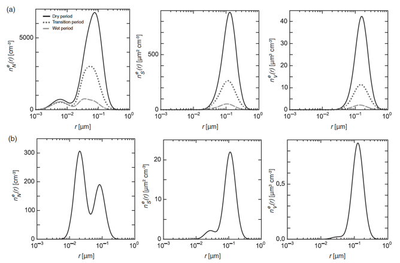
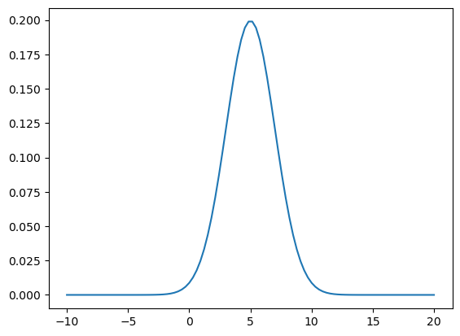
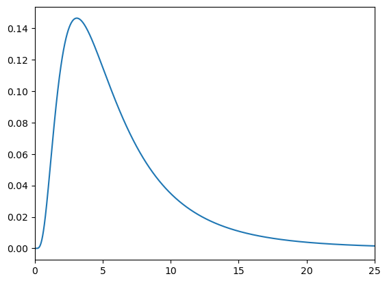
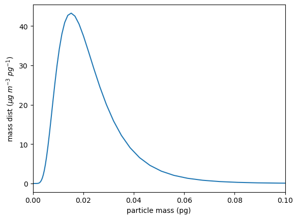
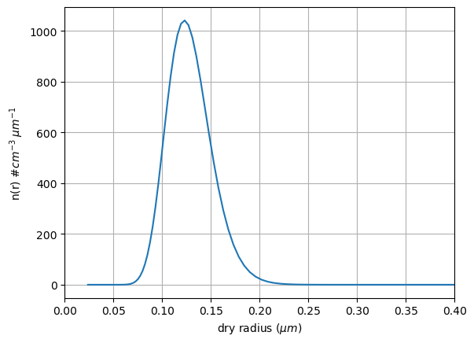
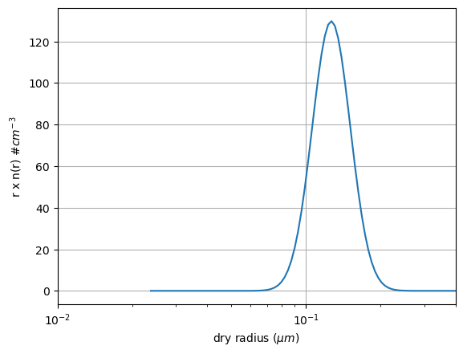

Worksheet 10: Aerosol distributions#
Download worksheet10_aero_dist.ipynb
Below we look at some mass and number distribution functions for atmospheric aerosols.
How do we describe the observations given by measurements such as those in Lohmann Fig. 5.5?
{kind=link}

Fig. 3 Lohmann textbook figure 5.5#
import numpy as np
from matplotlib import pyplot as plt
The normal distribution#
Recall the definition for the normal distribution
\(\mathcal{N}(\alpha;\mu,\sigma) = \frac{1}{\sigma\sqrt{2\pi}} \exp\left[-\frac {(\alpha - \mu)^{2}} {2\sigma^{2}}\right]\)
In python we can write this as
def normal(alpha,mu,sigma):
out=(1/(sigma*np.sqrt(2*np.pi)))*np.exp(-(alpha - mu)**2./(2*sigma**2.))
return out
mean and standard deviation, \(\mu\), \(\sigma\)#
alpha = np.linspace(-10,20,100)
mu=5
sigma = 2
out=normal(alpha,mu,sigma)
out_centers = (out[1:] + out[:-1])/2.
alpha_centers = (alpha[1:] + alpha[:-1])/2.
fig,ax = plt.subplots(1,1)
ax.plot(alpha,out);

numerical area – should be 1 for pdf#
area = np.sum(out_centers*np.diff(alpha))
print(f'gaussian normalizes to {area:.3f}')
gaussian normalizes to 1.000
numerical mean should be 5#
nummean = np.sum(alpha_centers*out_centers*np.diff(alpha))
print(f'numerical mean is {nummean:.3f}, analytic mean is {mu:.3f}')
numerical mean is 5.000, analytic mean is 5.000
numerical sd should be 2#
numvar = np.sum((alpha_centers - nummean)**2.*out_centers*np.diff(alpha))
print(f"numerical sd is {numvar:.3f}, analytic sigma is {sigma:.3f}")
numerical sd is 4.023, analytic sigma is 2.000
The lognormal distribution#
For a lognormal distribution, the variable that is normally distributed is \(\alpha = \ln x\). This distribution arises because processes that create the end value (like the mass of areosols) are multiplicative instead of additive. That is, while a normal variable is generated by the sum of many random variables (the central limit theorem) a lognomal variable is generated by the product of many random variables
\(\mathcal{N}(\ln(x);\mu,\sigma) = \frac{1}{\sigma\sqrt{2\pi}} \exp\left[-\frac {(\ln(x) - \mu)^{2}} {2\sigma^{2}}\right], \ \ x>0.\)
Note that it’s a little more complicated than just swapping \(\alpha = \ln x\). Recall that a change of variables has to conserve area, i.e.:
\(\mathcal{N}(\alpha, \mu, \sigma) d\alpha= \mathcal{N}(\ln x, \mu, \sigma) d\alpha = f(x)dx\)
and since:
\(d\alpha = d \alpha = \frac{dx}{x}\) this means:
\(\mathcal{N}(\ln x, \mu, \sigma) d\alpha = f(x)\; d\alpha \; x\) so that:
\(f(x) = \frac{1}{x} N(\ln x, \mu, \sigma) = \frac{1}{x \sigma\sqrt{2\pi}} \exp\left[-\frac {(\ln(x) - \mu)^{2}} {2\sigma^{2}}\right]\)
In python:
def lognormal(x,mu,sigma):
"""
parameters
----------
x: vector (float)
aerosol masses (kg) (for example)
mu: float
log(mean mass)
sigma: float
log(standard deviation)
returns
-------
out: vector (float)
lognormal pdf, normalized to 1
units
"""
out=(1/(x*sigma*np.sqrt(2*np.pi)))*np.exp(-(np.log(x) - mu)**2./(2*sigma**2.))
return out
x = np.linspace(-3,3,10000)
x = 10**x
mu=5
sigma = 2
out = lognormal(x,np.log(mu),np.log(sigma))
fig,ax = plt.subplots(1,1)
ax.plot(x,out)
ax.set(xlim=[0,25])
out_centers = (out[1:] + out[:-1])/2.
x_centers = (x[1:] + x[:-1])/2.

total probability should be 1#
area = np.sum(out_centers*np.diff(x))
print(f'lognormal normalizes to {area:.3f}')
lognormal normalizes to 1.000
mean should be log(5)#
nummean = np.sum(np.log(x_centers)*out_centers*np.diff(x))
print(f'numerical mean is {nummean:.3f}, analytic mean is {np.log(mu):.3f}')
numerical mean is 1.609, analytic mean is 1.609
sd should be log(2)#
numvar = np.sum((np.log(x_centers) - nummean)**2.*out_centers*np.diff(x))
print(f"numerical sd is {np.sqrt(numvar):.3f}, analytic sigma is {np.log(sigma)}")
numerical sd is 0.693, analytic sigma is 0.6931471805599453
lognormal aerosol mass distribution#
It’s an observational fact that aerosol masses tend to follow a lognormal distribuiton.
As a specific example take:
1. Mean aerosol mass \(\mu = 2 \times 10^{-17}\) kg
2. Log of the standard deviation = \(\ln 1.7\)
3. Total mass of aerosols = \(10^{-9}\; kg\;m^{-3}\) = 1 \(\mu g\;m^{-3}\)
4. Aerosol density 1775 \(kg\,m^{-3}\)
So what is the radius of a mean aerosol? We want to find:
\(4/3 \pi r^3 \times \rho_{aer}\) = \(2 \times 10^{-17}\) kg
rho_aer = 1775 #kg/m^3
rad_cubed = 2.e-17/(4./3.*np.pi*rho_aer)
volume_mean_rad = rad_cubed**(1./3.)
print(f'volume mean radius is {volume_mean_rad*1.e6:.3f} microns')
volume mean radius is 0.139 microns
Plot the mass distribution as a function of aerosol dry radius.#
1. First get the mass distribution as a function of mass
mass_vals = np.linspace(-19,-15,100) #kg
mass_vals = 10**mass_vals
tot_mass = 1.e-9 #kg/m^3
mu= np.log(2.e-17)
sd = np.log(1.7)
out = tot_mass*lognormal(mass_vals,mu,sd)
2. Note the units: out has units of \(kg\;m^{-3}\;kg^{-1}\) and mass_vals has units of \(kg\). For plotting, it would be better to have the x-axis in picograms (pg) where \(1 pg = 1 kg \times 10^{15}\;pg\;kg^{-1}\)
In addition the units for the y axis become:
\(kg\;m^{-3}\;kg^{-1}\;10^{-15}\;kg\;pg^{-1}\)
In the same way, we can convert the aerosol mass concentration from \(kg\;m^{-3}\) to \(\mu g\;m^{-3}\) by using \(kg \times 10^{9} \mu g\;kg^{-1}\)
That makes the y axis units:
\(kg\;m^{-3}\;kg^{-1}\) = 1 \(kg \times 10^{9} \mu g\;kg^{-1}\) and \(kg^{-1}\;10^{-15}\;kg\;pg^{-1}\) so the full conversion factor = \(10^{-6}\ \mu g\;m^{-3}\;pg^{-1}\)
So when we plot, we want to multiply the xaxis by \(10^{15}\) and the yaxis by \(10^{-6}\)
fig,ax = plt.subplots(1,1)
ax.plot(mass_vals*1.e15,out*1.e-6)
ax.set_xlim([0,0.1])
labels=ax.set(xlabel="particle mass (pg)",ylabel="mass dist $(\mu g\;m^{-3}\;pg^{-1})$")
out_centers = (out[1:] + out[:-1])/2.
area = np.sum(out_centers*np.diff(mass_vals)*1.e15*1.e-6)
print("area in micrograms/m^3 = {area:.1f}")
area in micrograms/m^3 = {area:.1f}
<>:4: SyntaxWarning: "\m" is an invalid escape sequence. Such sequences will not work in the future. Did you mean "\\m"? A raw string is also an option.
<>:4: SyntaxWarning: "\m" is an invalid escape sequence. Such sequences will not work in the future. Did you mean "\\m"? A raw string is also an option.
/var/folders/h3/5svt7fds58v0x7kkc54kl3640000gn/T/ipykernel_28697/1866162784.py:4: SyntaxWarning: "\m" is an invalid escape sequence. Such sequences will not work in the future. Did you mean "\\m"? A raw string is also an option.
labels=ax.set(xlabel="particle mass (pg)",ylabel="mass dist $(\mu g\;m^{-3}\;pg^{-1})$")

Number distribution n(r) (\(\# \,m^{-3}\;m^{-1}\))#
If we know the density of the spherical aerosols and the aerosol mass in a bin, then we can figure out the number of aerosols/\(m^3\) in the bin.
Call the mass distribution \(mass_{dist}\) with units of \((\mu g\;m^{-3}\;pg^{-1})\). Then the aerosol concentration for aerosols with masses in the range \(m \rightarrow m+dm\) is
\(m_{bin}(m) = mass_{dist}(m) dm\) units: \(kg\;m^{-3}\)
In the same way the numbers of aerosols in the bin is
\(n_{bin}\) = \(n(r) dr\) units: \(\#\;m^{-3}\)
but the aerosols are spherical, so in each bin with center mass \(m\) and center radius \(r\):
\(m_{bin} = 4/3 \pi r^3 \rho_{aer} n_{bin}\)
\(mass_{dist} dm = 4/3 \pi r^3 \rho_{aer} n(r) dr\)
\(dm = d (4/3 \pi r^3 \rho_{aer}) = 4 \pi r^2 \rho_{aer} dr\)
So combining these gives:
\(n(r) = \frac{3}{r} mass_{dist}(m)\)
Units
We’re still in mks, so \(n(r)\) has units of \(\#\;m^{-3}\;m^{-1}\).
Make this:
1 \(\#\;m^{-3}\;m^{-1}\) = 1 \(\#m^{-3} \times 10^{-6}\;m^{3}\;cm^{-3} \times 10^{-6} m\;\mu m^{-1}\) = \(1 \times 10^{-12}\ \#\;cm^{-3}\; \mu m^{-1}\)
So again, when we plot we multiply the xaxis by \(10^6\) and the yaxis by \(10^{-12}\)
rad_vals = (mass_vals/(np.pi*rho_aer*4./3.))**(1./3.)
ndist = 3.*out/rad_vals #units of number/m^3 per m bin width
fig,ax = plt.subplots(1,1)
ncenter = (ndist[1:] + ndist[:-1])/2.
#
# convert radii to microns and ndist to #/cc/um
#
ax.plot(rad_vals*1.e6,ndist*1.e-12)
ax.set(xlim=[0,0.4],xlabel="dry radius ($\mu m$)",
ylabel = r'n(r) $\# cm^{-3}\;\mu m^{-1}$')
ax.grid(True)
total_num=np.sum(ncenter*np.diff(rad_vals)*1.e-6)
print(f"total number concentration is {total_num:.2f} #/cc")
total number concentration is 57.57 #/cc
<>:9: SyntaxWarning: "\m" is an invalid escape sequence. Such sequences will not work in the future. Did you mean "\\m"? A raw string is also an option.
<>:9: SyntaxWarning: "\m" is an invalid escape sequence. Such sequences will not work in the future. Did you mean "\\m"? A raw string is also an option.
/var/folders/h3/5svt7fds58v0x7kkc54kl3640000gn/T/ipykernel_28697/1008016579.py:9: SyntaxWarning: "\m" is an invalid escape sequence. Such sequences will not work in the future. Did you mean "\\m"? A raw string is also an option.
ax.set(xlim=[0,0.4],xlabel="dry radius ($\mu m$)",

log units#
To connect with Lohmann textbook figure 5.5, we need to make a semilog plot for the radius, and \(r \times n(r)\) for the number concentration
rad_vals = (mass_vals/(np.pi*rho_aer*4./3.))**(1./3.)
ndist = 3.*out/rad_vals #units of number/m^3 per m bin width
fig,ax = plt.subplots(1,1)
ncenter = (ndist[1:] + ndist[:-1])/2.
#
# convert radii to microns and r*ndist to #/cc
#
yvals = ndist*rad_vals #number/m^3
yvals = yvals*1.e-6 #number/cm^3
xvals = rad_vals*1.e6 #microns
ax.semilogx(xvals,yvals)
ax.set(xlim=[0.01,0.4],xlabel="dry radius ($\mu m$)",
ylabel = r'r x n(r) $\# cm^{-3}$')
ax.grid(True)
# total_num=np.sum(ncenter*np.diff(rad_vals)*1.e-6)
# print(f"total number concentration is {total_num:.2f} #/cc")
<>:12: SyntaxWarning: "\m" is an invalid escape sequence. Such sequences will not work in the future. Did you mean "\\m"? A raw string is also an option.
<>:12: SyntaxWarning: "\m" is an invalid escape sequence. Such sequences will not work in the future. Did you mean "\\m"? A raw string is also an option.
/var/folders/h3/5svt7fds58v0x7kkc54kl3640000gn/T/ipykernel_28697/851549262.py:12: SyntaxWarning: "\m" is an invalid escape sequence. Such sequences will not work in the future. Did you mean "\\m"? A raw string is also an option.
ax.set(xlim=[0.01,0.4],xlabel="dry radius ($\mu m$)",

len(rad_vals)
100
Worksheet question 1#
Calculate the effective radius \(r_{eff}\) defined in equations 11 and 12 of my size distribution notes
# your code here
ndist_mid = (ndist[1:] + ndist[:-1])/2.
rmid = (rad_vals[1:] + rad_vals[:-1])/2.
dr = np.diff(rad_vals)
reff = np.sum(ndist_mid*rmid**3.*dr)/np.sum(ndist_mid*rmid**2.*dr)
print(f"{reff=:.2e} m")
rvol3 = np.sum(ndist_mid*rmid**3.*dr)/np.sum(ndist_mid*dr)
print(f"rvol = {rvol3**0.3333:.2e} m")
reff=1.37e-07 m
rvol = 1.33e-07 m
Worksheet question 2#
Calculate the droplet growth time constant \(\tau_r\) given Thompkins eq. 4.25. That is, find:
given:
for reasonable values of \(r\), \(S\) and \(T\) and show it is order 1 second.
# try this for a 1 micron drop
#
#
from a405.thermo.constants import constants as c
from a405.thermo.thermlib import find_esat
temp = 280 #K
r = 1.e-6 # m
S = 1.01
esat = find_esat(temp)
one_over_tau = (c.D*esat/(c.rhol*r**2.*c.Rv*temp))*(S-1)
tau = 1/one_over_tau
print(f"time constant tau = {tau:.2f} seconds")
time constant tau = 0.55 seconds
Worksheet 10 CCNC Problem#
Add a cell to this notebook that makes a plot of \(N(r)\) vs. \(S_{crit}\) for the \(n(r)\) in the previous cell, where:
\(N(r) = \int_r^\infty n(r) dr\) is the number of aerosols with dry radii larger than \(r\) and \(S_{crit}\) is the critical supersaturation at radius r for these ammonium sulphate aerosols. Explain briefly why this is the output you would expect to see from an aerosol size counter based on a cloud chamber with a laser scattering sensor.